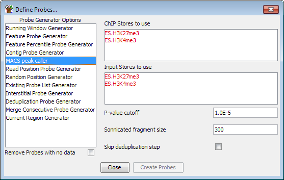

The MACS Peak Caller probe generator uses the methodology original used in MACS (Genome Biology 2008,9:R137) to do a statistically based peak calling suitable for use in ChIP-Seq samples where you have classical small focussed enrichment peaks.
The MACS methodology initially identifies a set of high-confidence peaks which exhibit between 20-100 fold enrichment in reads and then uses these to model the average distance between reads on the two DNA strands.
It next uses a binomial distribution to remove duplicate tags which are represented at statisically unlikely levels within the sample.
Next it generates a full set of candidate peaks by comparing the enrichment within windows to a poisson distribution modelled on the data density in the entire dataset.
Finally, the candidate peaks are checked against custom poisson distributions generated from the local environment around each peak at distances of 5 and 10kb. These local distributions can be calculated either from the ChIP sample, or from a matched control sample which you can use. For the matched control a distribution at 1kb is also calculated. The most conservative answer from all of the different distributions tried is finally used to assess the quality of the peak.
